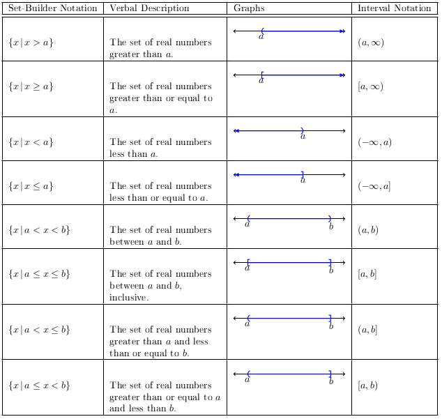

Section 1.7
Review of concepts
Definition 1
An inequality says that one expressions is:
greater than (\(>\))
greater than equal to (\(\ge\))
less than (\(<\)), or
less than equal to (\(\le\)) another expression.

Linear Inequality
First, we will look at a simple example involving inequality notations.
Example 10
Solve \(1-5x>11\).
Solution:
We solve the inequality the following way. Notice that when dividing by \(-5\) we flip the inequality.
Next, we consider what the graph will look like. To do this, we will test a value against the original inequality. If \(1-5x>11\) at \(x=0\) then we will graph towards zero on the number line. If the inequality is false then we graph away from zero.
Testing \(x=0\) we have:
This means we graph away from zero as follows:
The graph of the solution is:
From the graph, we see the solution set is \(\{x\,|\,x<-2\}\). Also, the interval notation is \((-\infty,-2)\).
Next, we will look at a nonlinear inequality. Remember, if \(ab=0\) then \(a=0\) or \(b=0\) by the zero product property. However, we do not use this property for nonlinear inequalities.
Nonlinear Inequality
Example 11
Solve \(x^2-x-12>0\).
Solution:
First, we want to know where \(x^2-x-12\) is zero.
By the zero product property, we know \(x=4\) or \(x=-3\).
With this information we have now partitioned the real number line into three subintervals: \((-\infty,-3)\), \((-3,4)\), and \((4,\infty)\). Since the polynomial is defined everywhere and is continuous everywhere we know that if \(x^2-x-12\) is greater than zero at some point on a subinterval then the expression is greater than zero for all \(x\) values in that subinterval.
That is, we will test values in each subinterval.
When \(x=-4\) we have \((-4)^2-(-4)-12 > 0\) which is true. This means we will shade to the left of \(x=-3\) on the number line.
When \(x=0\) we have \((0)^2-(0)-12 > 0\) which is false. This means we will not shade the middle interval.
When \(x=5\) we have \((5)2-(5)-12 > 0\) which is true. This means we will shade to the right of \(x=4\).
The graph of the solution should look like the following:
Based on the graph the solution set is \(\{x\,|\,x<-3\text{ or }4<x\}\). The interval notation would be \((-\infty,-3)\cup(4,\infty)\).
Here is a plot of \(y=x^2-x-12\) compared with the solution.
Example 12
Solve \(2x^2+5x-12\le 0\).
Solution:
First, we will solve \(2x2+5x-12 = 0\).
By the zero product property, we have \(x=-4\) or \(x=\frac{3}{2}\) as solutions to the equation. Next, identify the three subintervals created by these values and put them on a number line. Since there are no other zeros for the expression and the expression is defined everywhere with no jumps we know if we test one value on a subinterval that will determine the rest of the values in the subinterval.
When \(x=-5\) we have \(2(-5)^2+5(-5)-12\le 0\) which is flase. This means we will not shade the left-most subinterval.
When \(x=0\) we have \(2(0)^2+5(0)-12\le0\) which is true. This means we will shade the middle subinterval.
When \(x=2\) we have \(2(2)^2+5(2)-12\le0\) which is false. This means we will not shade the right-most subinterval.
The graph of the solution would look like:
From the graph we have the solution set \(\{x\,|\,-4\le x\le \frac{3}{2}\}\) and the interval notation is \([-4,\frac{3}{2}]\).
For context, we have the following graph.
Rational Inequality
Example 13
Solve \(\frac{6x+1}{2x-3} \le 6\)
Solution:
We will first solve \(\frac{6x-1}{2x-3} = 0\) like the previous examples.
The solution to the equation is \(x=\frac{19}{6}\). In the past, we would say this splits the number line into 2 subintervals. However, the expression is undefined at \(x=\frac{3}{2}\). This means we must include this value on the number line. Next, we will test values.
When \(x=0\) we have \(\frac{6(0)+1}{2(0)-3} \le 6\) which is true.
When \(x=2\) we have \(\frac{6(2)+1}{2(2)-3} \le 6\) which is false.
When \(x=4\) we have \(\frac{6(4)+1}{2(4)-3} \le 6\) which is true.
The graph of the solution would look like:
The solution set would be \(\{x\,|\,x<\frac{3}{2}\text{ or }\frac{19}{6}\le x\}\) and interval notation would be \((-\infty,\frac{3}{2})\cup[\frac{19}{6},\infty)\).
With context, we have: